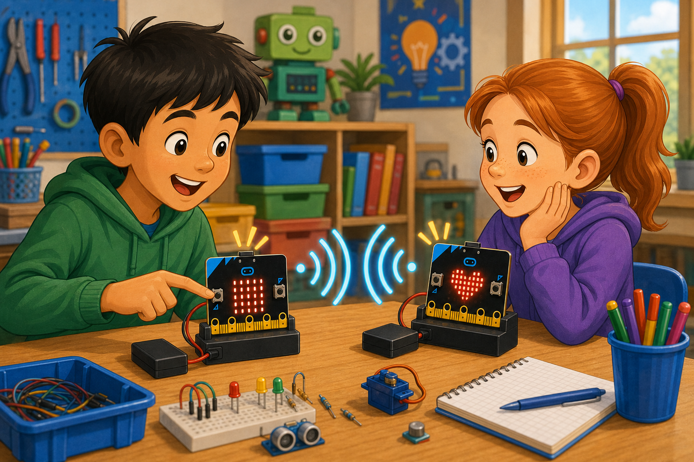
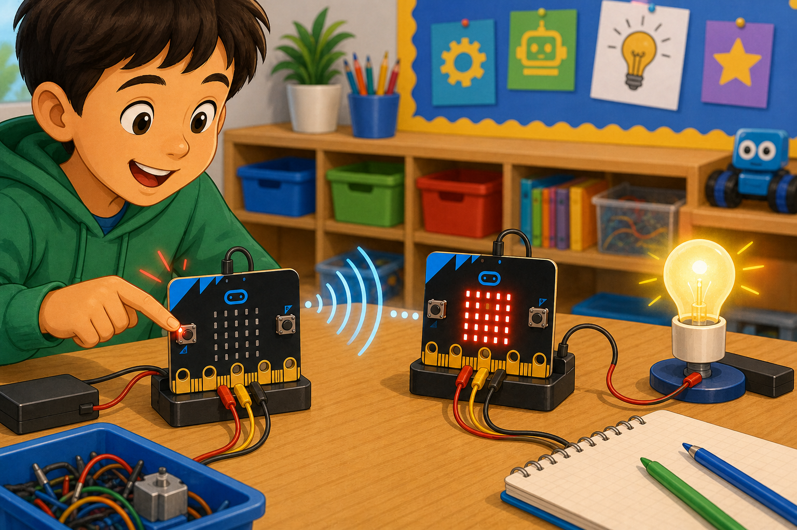

Wireless hello
DetectButton A is pressed
→
DecideTime to send
→
DoSend hello to others
The radio lets two or more micro:bits talk to each other wirelessly.
micro:bits set to the same group number can send and receive short messages.
Your projects can build chat tools, remote controls, or multiplayer games.


import radio
from microbit import *
radio.on()
radio.config(group=23)
while True:
if button_a.was_pressed():
radio.send("hello")
msg = radio.receive()radio.setGroup(23)
input.onButtonPressed(Button.A, function () {
radio.sendString("hello")
})
radio.onReceivedString(function (receivedString) {
basic.showString(receivedString)
})radio.on() before sending or receiving.